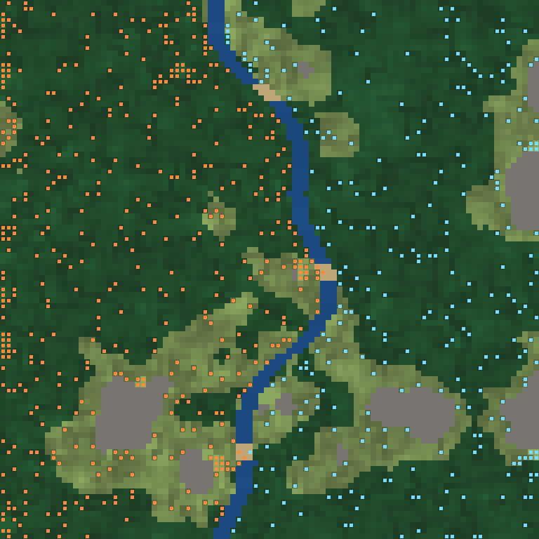

River World on the DesktopScenarios A and B in one sealed world, with a river down the middle
11 OCTOBER 2026

COVERSInstall · four first-run checks · sixteen seeds on a Ryzen 9 5950X · the first experiment · six more · reading the log · the RTX 3070 · a week-long run
BUILT ONRunning Persistent AI Worlds, second edition